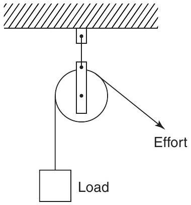
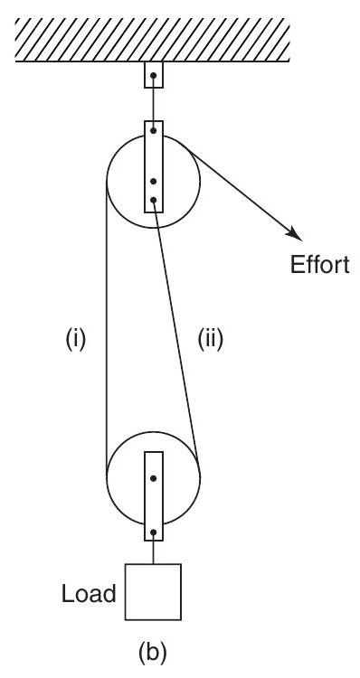
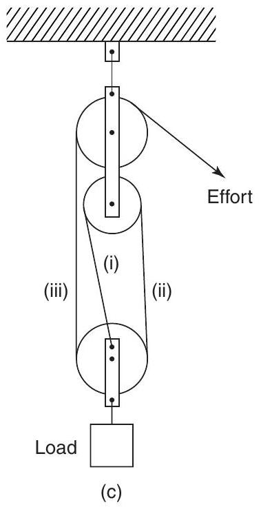
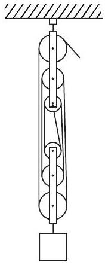
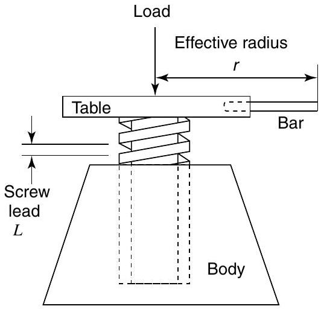
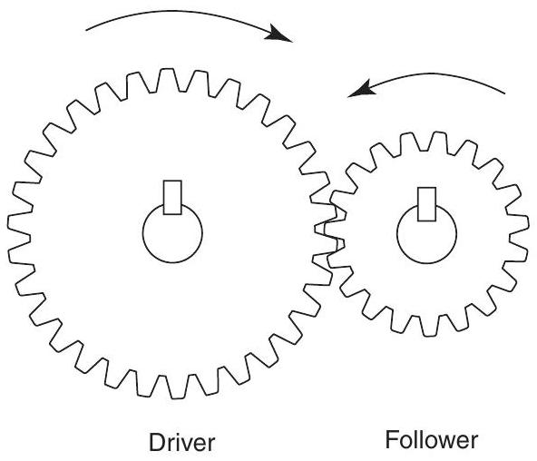
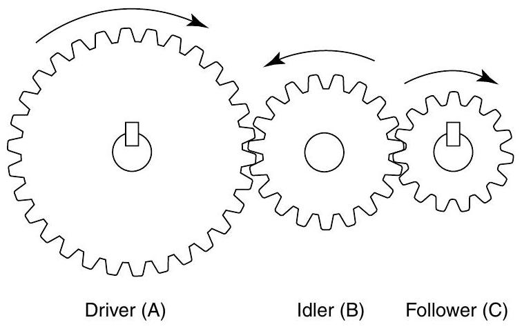
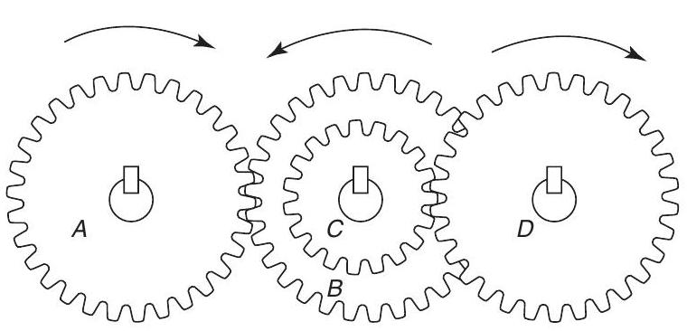
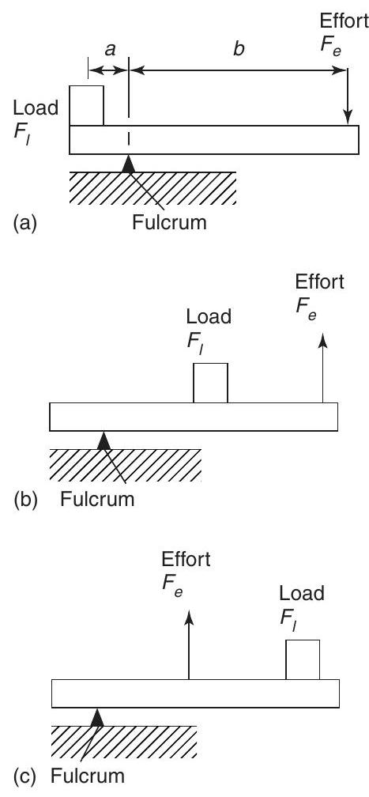

Mechanical science - Simple machines
Simple machines
At the end of this chapter you should be able to:
- define a simple machine
- define force ratio, movement ratio, efficiency and limiting efficiency
- understand and perform calculations with pulley systems
- understand and perform calculations with a simple screw-jack
- understand and perform calculations with gear trains
- understand and perform calculations with levers
18.1 Machines
A machine is a device that can change the magnitude or line of action, or both magnitude and line of action of a force. A simple machine usually amplifies an input force, called the effort, to give a larger output force, called the load. Some typical examples of simple machines include pulley systems, screwjacks, gear systems and lever systems.
18.2 Force ratio, movement ratio and efficiency
The force ratio or mechanical advantage is defined as the ratio of load to effort, i.e.
Since both load and effort are measured in newtons, force ratio is a ratio of the same units and thus is a dimension-less quantity.
The movement ratio or velocity ratio is defined as the ratio of the distance moved by the effort to the distance moved by the load, i.e.
Since the numerator and denominator are both measured in metres, movement ratio is a ratio of the same units and thus is a dimension-less quantity.
The efficiency of a simple machine is defined as the ratio of the force ratio to the movement ratio, i.e.
Since the numerator and denominator are both dimension-less quantities, efficiency is a dimensionless quantity. It is usually expressed as a percentage, thus:
Due to the effects of friction and inertia associated with the movement of any object, some of the input energy to a machine is converted into heat and losses occur. Since losses occur, the energy output of a machine is less than the energy input, thus the mechanical efficiency of any machine cannot reach $100\%$
For simple machines, the relationship between effort and load is of the form: $F_{e}=aF_{l}+b$, where $F_{e}$ is the effort, $F_{l}$ is the load and $a$ and $b$ are constants. From equation (18.1), $$ \text {force ratio}=\frac{\text {load}}{\text {effort}}=\frac{F_{l}}{F_{e}}=\frac{F_{l}}{aF_{l}+b} $$ Dividing both numerator and denominator by $F_{l}$ gives: $$ \frac{F_{l}}{aF_{l}+b}=\frac{1}{a+\frac{b}{F_{l}}} $$
When the load is large, $F_{l}$ is large and $\frac{b}{F_{l}}$ is small compared with $a$. The force ratio then becomes approximately equal to $\frac{1}{a}$ and is called the limiting force ratio, i.e
The limiting efficiency of a simple machine is defined as the ratio of the limiting force ratio to the movement ratio, i.e.
Limiting efficiency
where $a$ is the constant for the law of the machine: $$ F_{e}=aF_{l}+b $$ Due to friction and inertia, the limiting efficiency of simple machines is usually well below $100\%$.
Problem 1. A simple machine raises a load of 160 kg through a distance of 1.6 m . The effort applied to the machine is 200 N and moves through a distance of 16 m . Taking $g$ as $9.8\mathrm{~m}/ \mathrm{s}^{2}$, determine the force ratio, movement ratio and efficiency of the machine.
From equation (18.1), $$ \begin{aligned} \text {force ratio} &=\frac{\text {load}}{\text {effort}}=\frac{160\mathrm{~kg}}{200\mathrm{~N}} \\ &=\frac{160 \times 9.8\mathrm{~N}}{200\mathrm{~N}}=\mathbf{7.84}\end{aligned} $$ From equation (18.2), $$ \begin{aligned} \text {movement ratio} &=\frac{\text {distance moved by the effort}}{\text {distance moved by the load}} \\ &=\frac{16\mathrm{~m}}{1.6\mathrm{~m}}=\mathbf{10}\end{aligned} $$ From equation (18.3), $$ \begin{aligned} \text {efficiency} &=\frac{\text {force ratio}}{\text {movement ratio}} \times 100\% \\ &=\frac{7.84}{10} \times 100=\mathbf{78.4\%}\end{aligned} $$
Problem 2. For the simple machine of Problem 1, determine: (a) the distance moved by the effort to move the load through a distance of 0.9 m , (b) the effort which would be required to raise a load of 200 kg , assuming the same efficiency, (c) the efficiency if, due to lubrication, the effort to raise the 160 kg load is reduced to 180 N .
(a) Since the movement ratio is 10 , then from equation (18.2), distance moved by the effort $$ \begin{aligned} &=10 \times \text {distance moved by the load} \\ &=10 \times 0.9=\mathbf{9}\mathbf{~ m}\end{aligned} $$
(b) Since the force ratio is 7.84 , then from equation (18.1), $$ \text {effort}=\frac{\text {load}}{7.84}=\frac{200 \times 9.8}{7.84}=\mathbf{250}\mathbf{~ N} $$
(c) The new force ratio is given by $$ \frac{\text {load}}{\text {effort}}=\frac{160 \times 9.8}{180}=8.711 $$ Hence the new efficiency after lubrication $$ =\frac{8.711}{10} \times 100=\mathbf{87.11\%} $$
Problem 3. In a test on a simple machine, the effort/load graph was a straight line of the form $F_{e}=aF_{l}+b$. Two values lying on the graph were at $F_{e}=10\mathrm{~N}, F_{l}=30\mathrm{~N}$, and at $F_{e}=74\mathrm{~N}, F_{l}=350\mathrm{~N}$. The movement ratio of the machine was 17. Determine: (a) the limiting force ratio, (b) the limiting efficiency of the machine.
(a) The equation $F_{e}=aF_{l}+b$ is of the form $y=mx+c$, where $m$ is the gradient of the graph. The slope of the line passing through points $\left(x_{1}, y_{1}\right)$ and $\left(x_{2}, y_{2}\right)$ of the graph $y=mx+c$ is given by: $$ m=\frac{y_{2}-y_{1}}{x_{2}-x_{1}} $$ Thus for $F_{e}=aF_{l}+b$, the slope $a$ is given by: $$ a=\frac{74-10}{350-30}=\frac{64}{320}=0.2 $$ The limiting force ratio is $\frac{1}{a}$, that is $\frac{1}{0.2}=\mathbf{5}$
(b) The limiting efficiency $$ \begin{aligned} &=\frac{1}{a \times \text {movement ratio}} \times 100 \\ &=\frac{1}{0.2 \times 17} \times 100=\mathbf{29.4\%}\end{aligned} $$
Now try the following exercise
Exercise 89 Further problems on force ratio, movement ratio and efficiency
- A simple machine raises a load of 825 N through a distance of 0.3 m . The effort is 250 N and moves through a distance of 3.3 m . Determine: (a) the force ratio, (b) the movement ratio, (c) the efficiency of the machine at this load. [(a) 3.3 (b) 11 (c) $30 \%$ ]
- The efficiency of a simple machine is $50 \%$. If a load of 1.2 kN is raised by an effort of 300 N , determine the movement ratio. [8]
- An effort of 10 N applied to a simple machine moves a load of 40 N through a distance of 100 mm , the efficiency at this load being $80 \%$. Calculate: (a) the movement ratio, (b) the distance moved by the effort. [(a) 5 (b) 500 mm ]
- The effort required to raise a load using a simple machine, for various values of load is as shown: Load $F_{l}$ (N) 2050 4120 7410 8240 10300 Effort $F_{e}$ (N) 252 340 465 505 580 If the movement ratio for the machine is 30 , determine (a) the law of the machine, (b) the limiting force ratio, (c) the limiting efficiency. [(a) $F_{e}=0.04F_{l}+170$ (b) 25 (c) $83.3 \%$ ]
- For the data given in question 4, determine the values of force ratio and efficiency for each value of the load. Hence plot graphs of effort, force ratio and efficiency to a base of load. From the graphs, determine the effort required to raise a load of 6 kN and the efficiency at this load. [410 N, 49%]
18.3 Pulleys
A pulley system is a simple machine. A singlepulley system, shown in Figure 18.1(a), changes the line of action of the effort, but does not change the magnitude of the force. A two-pulley system, shown in Figure 18.1(b), changes both the line of action and the magnitude of the force.
(a)
Figure 18.1(a)
Theoretically, each of the ropes marked (i) and (ii) share the load equally, thus the theoretical effort is only half of the load, i.e. the theoretical force ratio is 2 . In practice the actual force ratio is less than 2 due to losses. A three-pulley system is shown in Figure 18.1(c). Each of the ropes marked (i), (ii) and (iii) carry one-third of the load, thus the theoretical force ratio is 3 . In general, for a multiple pulley system having a total of $n$ pulleys, the theoretical force ratio is $n$. Since the theoretical efficiency of a pulley system (neglecting losses) is 100
Figure 18.1(b)
Figure 18.1(c)
and since from equation (18.3), $$ \text {efficiency}=\frac{\text {force ratio}}{\text {movement ratio}} \times 100\% $$ it follows that when the force ratio is $n$, $$ 100=\frac{n}{\text {movement ratio}} \times 100 $$ that is, the movement ratio is also $n$.
Problem 4. A load of 80 kg is lifted by a three-pulley system similar to that shown in Figure 18.1(c) and the applied effort is 392 N. Calculate (a) the force ratio, (b) the movement ratio, (c) the efficiency of the system. Take $g$ to be $9.8\mathrm{~m}/ \mathrm{s}^{2}$.
(a) From equation (18.1), the force ratio is given by $\frac{\text {load}}{\text {effort}}$ The load is 80 kg , i.e. $(80 \times 9.8)\mathrm{~N}$, hence $$ \text {force ratio}=\frac{80 \times 9.8}{392}=\mathbf{2} $$
(b) From above, for a system having $n$ pulleys, the movement ratio is $n$. Thus for a three-pulley system, the movement ratio is $\mathbf{3}$
(c) From equation (18.3), $$ \begin{aligned} \text {efficiency} &=\frac{\text {force ratio}}{\text {movement ratio}} \times 100 \\ &=\frac{2}{3} \times 100=\mathbf{66.67\%}\end{aligned} $$
Problem 5. A pulley system consists of two blocks, each containing three pulleys and connected as shown in Figure 18.2. An effort of 400 N is required to raise a load of 1500 N. Determine (a) the force ratio, (b) the movement ratio, (c) the efficiency of the pulley system.
Figure 18.2
(a) From equation (18.1), $$ \text {force ratio}=\frac{\text {load}}{\text {effort}}=\frac{1500}{400}=\mathbf{3.75} $$
(b) An $n$-pulley system has a movement ratio of $n$, hence this 6-pulley system has a movement ratio of 6
(c) From equation (18.3), $$ \begin{aligned} \text {efficiency} &=\frac{\text {force ratio}}{\text {movement ratio}} \times 100 \\ &=\frac{3.75}{6} \times 100=\mathbf{62.5\%}\end{aligned} $$
Now try the following exercise
Exercise 90 Further problems on pulleys
- A pulley system consists of four pulleys in an upper block and three pulleys in a lower block. Make a sketch of this arrangement showing how a movement ratio of 7 may be obtained. If the force ratio is 4.2, what is the efficiency of the pulley. [60%]
- A three-pulley lifting system is used to raise a load of 4.5 kN . Determine the effort required to raise this load when losses are neglected. If the actual effort required is 1.6 kN , determine the efficiency of the pulley system at this load. [1.5 kN, 93.75%]
18.4 The screw-jack
A simple screw-jack is shown in Figure 18.3 and is a simple machine since it changes both the magnitude and the line of action of a force.
Figure 18.3
The screw of the table of the jack is located in a fixed nut in the body of the jack. As the table is rotated by means of a bar, it raises or lowers a load placed on the table. For a single-start thread, as shown, for one complete revolution of the table, the effort moves through a distance $2\pi r$, and the load moves through a distance equal to the lead of the screw, say, $L$. $$ \text {Movement ratio}=\frac{2\pi r}{L} $$
Problem 6. A screw-jack is being used to support the axle of a car, the load on it being 2.4 kN . The screw jack has an effort of effective radius 200 mm and a single-start square thread, having a lead of 5 mm . Determine the efficiency of the jack if an effort of 60 N is required to raise the car axle.
From equation (18.3), $$ \text {efficiency}=\frac{\text {force ratio}}{\text {movement ratio}} \times 100\% $$ where force ratio $=\frac{\text {load}}{\text {effort}}=\frac{2400\mathrm{~N}}{60\mathrm{~N}}=40$ From equation (18.4), $$ \begin{aligned} \text {movement ratio} &=\frac{2\pi r}{L}=\frac{2\pi(200)\mathrm{~mm}}{5\mathrm{~mm}} \\ &=251.3\end{aligned} $$ Hence, $\quad$ efficiency $=\frac{\text {force ratio}}{\text {movement ratio}} \times 100$ $$=\frac{40}{251.3} \times 100=\mathbf{15.9\%}$$
Now try the following exercise
Exercise 91 Further problems on the screw-jack
- Sketch a simple screw-jack. The singlestart screw of such a jack has a lead of 6 mm and the effective length of the operating bar from the centre of the screw is 300 mm . Calculate the load which can be raised by an effort of 150 N if the efficiency at this load is $20 \%$. [ 9.425 kN ]
- A load of 1.7 kN is lifted by a screw-jack having a single-start screw of lead 5 mm . The effort is applied at the end of an arm of effective length 320 mm from the centre of the screw. Calculate the effort required if the efficiency at this load is 25%. [16.91 N]
18.5 Gear trains
A simple gear train is used to transmit rotary motion and can change both the magnitude and the line of action of a force, hence is a simple machine. The gear train shown in Figure 18.4 consists of spur gears and has an effort applied to one gear, called the driver, and a load applied to the other gear, called the follower.
Figure 18.4
In such a system, the teeth on the wheels are so spaced that they exactly fill the circumference with a whole number of identical teeth, and the teeth on the driver and follower mesh without interference. Under these conditions, the number of teeth on the driver and follower are in direct proportion to the circumference of these wheels, i.e.
If there are, say, 40 teeth on the driver and 20 teeth on the follower then the follower makes two revolutions for each revolution of the driver. In general:
It follows from equation (18.6) that the speeds of the wheels in a gear train are inversely proportional to the number of teeth. The ratio of the speed of the driver wheel to that of the follower is the movement ratio, i.e.
When the same direction of rotation is required on both the driver and the follower an idler wheel is used as shown in Figure 18.5.
Figure 18.5
Let the driver, idler, and follower be $A, B$ and $C$, respectively, and let $N$ be the speed of rotation and $T$ be the number of teeth. Then from equation (18.7), $$ \frac{N_{B}}{N_{A}}=\frac{T_{A}}{T_{B}} \text {or} N_{A}=N_{B}\frac{T_{B}}{T_{A}} $$ and $$ \frac{N_{C}}{N_{B}}=\frac{T_{B}}{T_{C}} \text {or} N_{C}=N_{B}\frac{T_{B}}{T_{C}} $$ Thus $$ \begin{aligned} \frac{\text {speed of} A}{\text {speed of} C} &=\frac{N_{A}}{N_{C}}=\frac{N_{B}\frac{T_{B}}{T_{A}}}{N_{B}\frac{T_{B}}{T_{C}}} \\ &=\frac{T_{B}}{T_{A}} \times \frac{T_{C}}{T_{B}}=\frac{T_{C}}{T_{A}}\end{aligned} $$ This shows that the movement ratio is independent of the idler, only the direction of the follower being altered.
A compound gear train is shown in Figure 18.6, in which gear wheels $B$ and $C$ are fixed to the same shaft and hence $N_{B}=N_{C}$. From equation (18.7), $$ \frac{N_{A}}{N_{B}}=\frac{T_{B}}{T_{A}} \text {i.e.} N_{B}=N_{A} \times \frac{T_{A}}{T_{B}} $$
Figure 18.6
Also, $$ \frac{N_{D}}{N_{C}}=\frac{T_{C}}{T_{D}} \text {i.e.} N_{D}=N_{C} \times \frac{T_{C}}{T_{D}} $$ But $N_{B}=N_{C}$, and $$ N_{D}=N_{B} \times \frac{T_{C}}{T_{D}} $$ therefore $$ N_{D}=N_{A} \times \frac{T_{A}}{T_{B}} \times \frac{T_{C}}{T_{D}} $$
For compound gear trains having, say, $P$ gear wheels, $$ N_{P}=N_{A} \times \frac{T_{A}}{T_{B}} \times \frac{T_{C}}{T_{D}} \times \frac{T_{E}}{T_{F}} \ldots \ldots \times \frac{T_{O}}{T_{P}} $$ from which, $$ \text {movement ratio}=\frac{N_{A}}{N_{P}}=\frac{T_{B}}{T_{A}} \times \frac{T_{D}}{T_{C}} \ldots \ldots \times \frac{T_{P}}{T_{O}} $$
Problem 7. A driver gear on a shaft of a motor has 35 teeth and meshes with a follower having 98 teeth. If the speed of the motor is 1400 revolutions per minute, find the speed of rotation of the follower.
From equation (18.7), $$ \frac{\text {speed of driver}}{\text {speed of follower}}=\frac{\text {teeth on follower}}{\text {teeth on driver}} $$ i.e. $$ \frac{1400}{\text {speed of follower}}=\frac{98}{35} $$ Hence, $$ \begin{aligned} \text {speed of follower} &= \frac{1400 \times 35}{98} \\ &=\mathbf{500}\mathbf{~rev}/ \mathbf{min}\end{aligned} $$
Problem 8. A compound gear train similar to that shown in Figure 18.6 consists of a driver gear $A$, having 40 teeth, engaging with gear $B$, having 160 teeth. Attached to the same shaft as $B$, gear $C$ has 48 teeth and meshes with gear $D$ on the output shaft, having 96 teeth. Determine (a) the movement ratio of this gear system and (b) the efficiency when the force ratio is 6 .
(a) From equation (18.8), the speed of $D$ $$ =\text {speed of} A \times \frac{T_{A}}{T_{B}} \times \frac{T_{C}}{T_{D}} $$ From equation (18.7), movement ratio $$ \begin{aligned} &=\frac{\text {speed of} A}{\text {speed of} D}=\frac{T_{B}}{T_{A}} \times \frac{T_{D}}{T_{C}} \\ &=\frac{160}{40} \times \frac{96}{48}=\mathbf{8}\end{aligned} $$
(b) The efficiency of any simple machine is $$ \frac{\text {force ratio}}{\text {movement ratio}} \times 100\% $$ Thus, efficiency $$ =\frac{6}{8} \times 100=\mathbf{75\%} $$
Now try the following exercise
Exercise 92 Further problems on gear trains
- The driver gear of a gear system has 28 teeth and meshes with a follower gear having 168 teeth. Determine the movement ratio and the speed of the follower when the driver gear rotates at 60 revolutions per second. [6, $10\mathrm{rev}/ \mathrm{s}$ ]
- A compound gear train has a 30-tooth driver gear $A$, meshing with a 90-tooth follower gear $B$. Mounted on the same shaft as $B$ and attached to it is a gear $C$ with 60 teeth, meshing with a gear $D$ on the output shaft having 120 teeth. Calculate the movement and force ratios if the overall efficiency of the gears is $72 \%$. [6, 4.32]
- A compound gear train is as shown in Figure 18.6. The movement ratio is 6 and the numbers of teeth on gears $A, C$ and $D$ are 25,100 and 60, respectively. Determine the number of teeth on gear $B$ and the force ratio when the efficiency is $60 \%$. [250, 3.6]
18.6 Levers
A lever can alter both the magnitude and the line of action of a force and is thus classed as a simple machine. There are three types or orders of levers, as shown in Figure 18.7.
Figure 18.7
A lever of the first order has the fulcrum placed between the effort and the load, as shown in Figure 18.7(a).
A lever of the second order has the load placed between the effort and the fulcrum, as shown in Figure 18.7(b).
A lever of the third order has the effort applied between the load and the fulcrum, as shown in Figure 18.7(c).
Problems on levers can largely be solved by applying the principle of moments (see Chapter 5). Thus for the lever shown in Figure 18.7(a), when the lever is in equilibrium, $$ \text {anticlockwise moment}=\text {clockwise moment} $$ i.e. $$ a \times F_{l}=b \times F_{e} $$ Thus, force ratio $$ =\frac{F_{l}}{F_{e}}=\frac{b}{a}=\frac{\text {distance of effort from fulcrum}}{\text {distance of load from fulcrum}} $$
Problem 9. The load on a first-order lever, similar to that shown in Figure 18.7(a), is 1.2 kN . Determine the effort, the force ratio and the movement ratio when the distance between the fulcrum and the load is 0.5 m and the distance between the fulcrum and effort is 1.5 m . Assume the lever is $100\%$ efficient.
Applying the principle of moments, for equilibrium: i.e. $$ \text {anticlockwise moment}=\text {clockwise moment} $$ Hence, $$ 1200\mathrm{~N} \times 0.5\mathrm{~m}=\text {effort} \times 1.5\mathrm{~m} $$ $$ \begin{aligned} \text {effort} &= \frac{1200 \times 0.5}{1.5} \\ &=\mathbf{400}\mathbf{~ N}\end{aligned} $$ $$ \text {force ratio}=\frac{F_{l}}{F_{e}}=\frac{1200}{400}=\mathbf{3} $$ Alternatively, $\quad$ force ratio $=\frac{b}{a}=\frac{1.5}{0.5}=\mathbf{3}$ This result shows that to lift a load of, say, 300 N , an effort of 100 N is required.
Since, from equation (3), $$ \text {efficiency}=\frac{\text {force ratio}}{\text {movement ratio}} \times 100\% $$ then, $$ \begin{aligned} \text {movement ratio} &= \frac{\text {force ratio}}{\text {efficiency}} \times 100 \\ &=\frac{3}{100} \times 100=\mathbf{3}\end{aligned} $$ This result shows that to raise the load by, say, 100 mm , the effort has to move 300 mm .
Problem 10. A second-order lever, $AB$, is in a horizontal position. The fulcrum is at point $C$. An effort of 60 N applied at $B$ just moves a load at point $D$, when $BD$ is 0.5 m and $BC$ is 1.25 m . Calculate the load and the force ratio of the lever.
A second-order lever system is shown in Figure 18.7(b). Taking moments about the fulcrum as the load is just moving, gives: $$ \text {anticlockwise moment}=\text {clockwise moment} $$ i.e. $$ 60\mathrm{~N} \times 1.25\mathrm{~m}=\text {load} \times 0.75\mathrm{~m} $$ Thus, $$ \begin{aligned} \text {load} &= \frac{60 \times 1.25}{0.75} \\ &=\mathbf{100}\mathbf{~ N}\end{aligned} $$ From equation (1), $$ \text {force ratio}=\frac{\text {load}}{\text {effort}}=\frac{100}{60}=\mathbf{1.67} $$ Alternatively, $$ \begin{aligned} \text {force ratio} &=\frac{\text {distance of effort from fulcrum}}{\text {distance of load from fulcrum}} \\ &=\frac{1.25}{0.75}=\mathbf{1.67}\end{aligned} $$
Now try the following exercises
Exercise 93 Further problems on levers
- In a second-order lever system, the force ratio is 2.5 . If the load is at a distance of 0.5 m from the fulcrum, find the distance that the effort acts from the fulcrum if losses are negligible. [ 1.25 m ]
- A lever $AB$ is 2 m long and the fulcrum is at a point 0.5 m from $B$. Find the effort to be applied at $A$ to raise a load of 0.75 kN at $B$ when losses are negligible. [250 N]
- The load on a third-order lever system is at a distance of 750 mm from the fulcrum and the effort required to just move the load is 1 kN when applied at a distance of 250 mm from the fulcrum. Determine the value of the load and the force ratio if losses are negligible. [333.3 N, 1/3]
Exercise 94 Short answer questions on simple machines
- State what is meant by a simple machine.
- Define force ratio.
- Define movement ratio.
- Define the efficiency of a simple machine in terms of the force and movement ratios.
- State briefly why the efficiency of a simple machine cannot reach $100 \%$.
- With reference to the law of a simple machine, state briefly what is meant by the term 'limiting force ratio'.
- Define limiting efficiency.
- Explain why a four-pulley system has a force ratio of 4 when losses are ignored.
- Give the movement ratio for a screwjack in terms of the effective radius of the effort and the screw lead.
- Explain the action of an idler gear.
- Define the movement ratio for a twogear system in terms of the teeth on the wheels.
- Show that the action of an idler wheel does not affect the movement ratio of a gear system.
- State the relationship between the speed of the first gear and the speed of the last gear in a compound train of four gears, in terms of the teeth on the wheels.
- Define the force ratio of a first-order lever system in terms of the distances of the load and effort from the fulcrum.
- Use sketches to show what is meant by: (a) a first-order, (b) a second- order, (c) a third-order lever system. Give one practical use for each type of lever.
Exercise 95 Multi-choice questions on simple machines (Answers on page 285)
A simple machine requires an effort of 250 N moving through 10 m to raise a load of 1000 N through 2 m . Use this data to find the correct answers to questions 1 to 3, selecting these answers from: (a) 0.25 (b) 4 (c) $80 \%$ (d) $20 \%$ (e) 100 (f) 5 (g) $100 \%$ (h) 0.2 (i) $25 \%$
- Find the force ratio.
- Find the movement ratio.
- Find the efficiency.
The law of a machine is of the form $F_{e}=$ $aF_{l}+b$. An effort of 12 N is required to raise a load of 40 N and an effort of 6 N is required to raise a load of 16 N . The movement ratio of the machine is 5 . Use this data to find the correct answers to questions 4 to 6, selecting these answers from: (a) $80 \%$ (b) 4 (c) 2.8 (d) 0.25 (e) $\frac{1}{2.8}$ (f) $25 \%$ (g) $100 \%$ (h) 2 (i) $25 \%$
- Determine the constant ' $a$ '.
- Find the limiting force ratio.
- Find the limiting efficiency.
- Which of the following statements is false ? (a) A single-pulley system changes the line of action of the force but does not change the magnitude of the force, when losses are neglected. (b) In a two-pulley system, the force ratio is $\frac{1}{2}$ when losses are neglected. (c) In a two-pulley system, the movement ratio is 2 . (d) The efficiency of a two-pulley system is $100 \%$ when losses are neglected.
- Which of the following statements concerning a screw-jack is false ? (a) A screw-jack changes both the line of action and the magnitude of the force. (b) For a single-start thread, the distance moved in 5 revolutions of the table is $5l$, where $l$ is the lead of the screw. (c) The distance moved by the effort is $2\pi r$, where $r$ is the effective radius of the effort. (d) The movement ratio is given by $\frac{2\pi r}{5l}$
- In a simple gear train, a follower has 50 teeth and the driver has 30 teeth. The movement ratio is: (a) 0.6 (b) 20 (c) 1.67 (d) 80
- Which of the following statements is true? (a) An idler wheel between a driver and a follower is used to make the direction of the follower opposite to that of the driver. (b) An idler wheel is used to change the movement ratio. (c) An idler wheel is used to change the force ratio. (d) An idler wheel is used to make the direction of the follower the same as that of the driver.
- Which of the following statements is false ? (a) In a first-order lever, the fulcrum is between the load and the effort. (b) In a second-order lever, the load is between the effort and the fulcrum. (c) In a third-order lever, the effort is applied between the load and the fulcrum. (d) The force ratio for a first-order lever system is given by: $\frac{\text {distance of load from fulcrum}}{\text {distance of effort from fulcrum}}$
- In a second-order lever system, the load is 200 mm from the fulcrum and the effort is 500 mm from the fulcrum. If losses are neglected, an effort of 100 N will raise a load of: (a) 100 N (b) 250 N (c) 400 N (d) 40 N